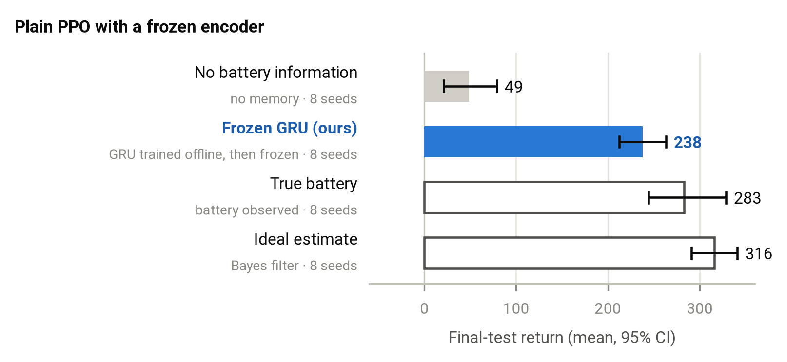
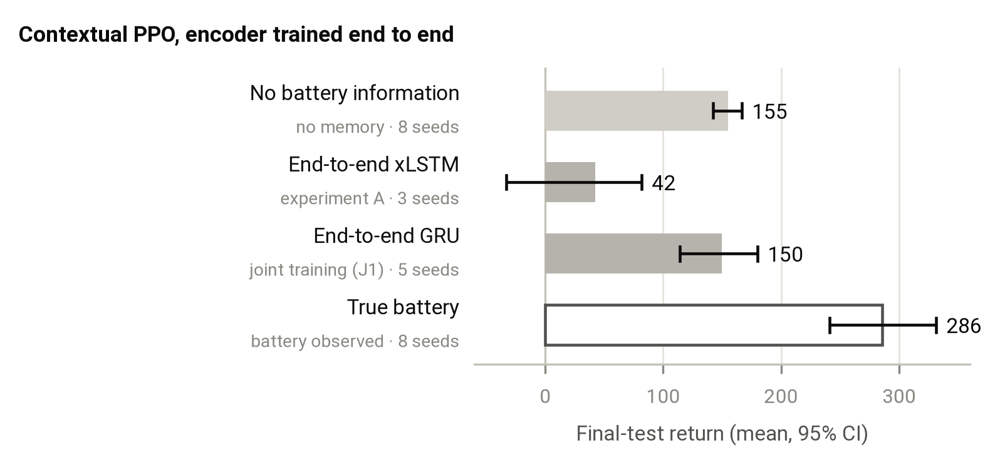
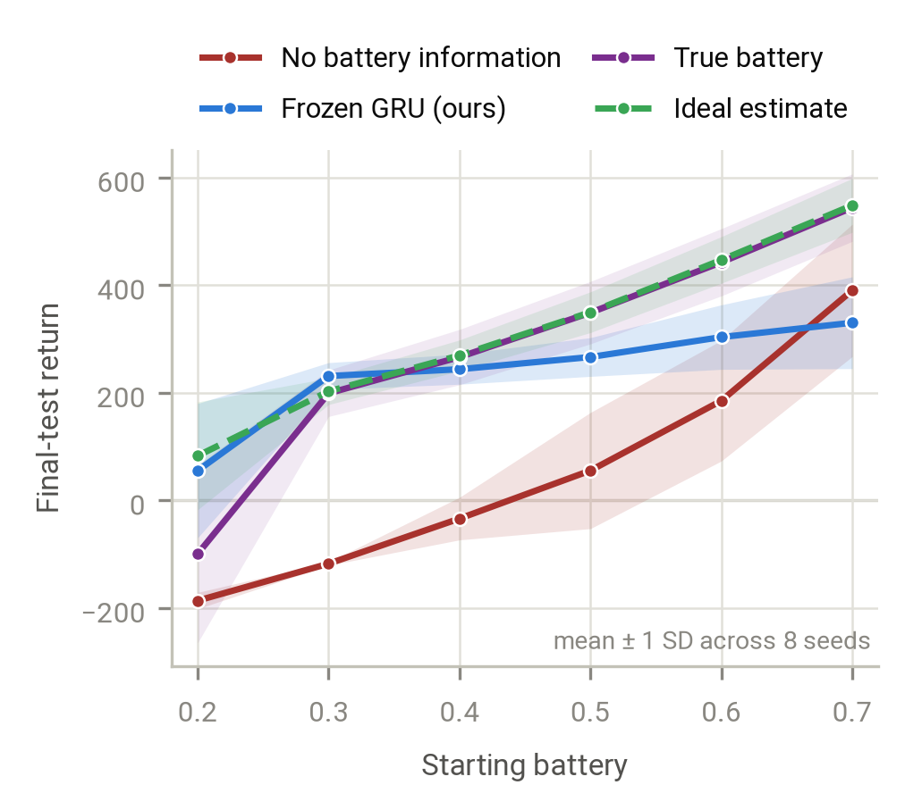
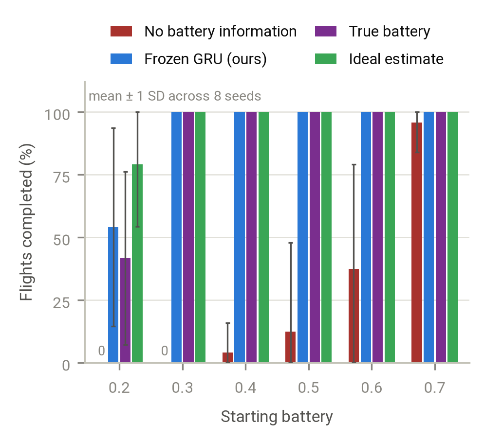
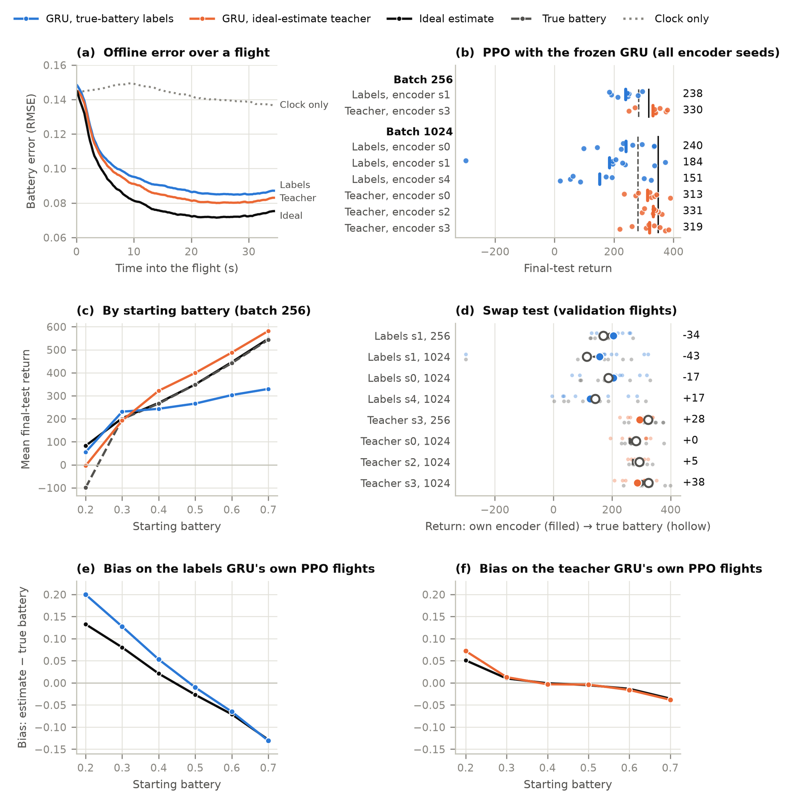
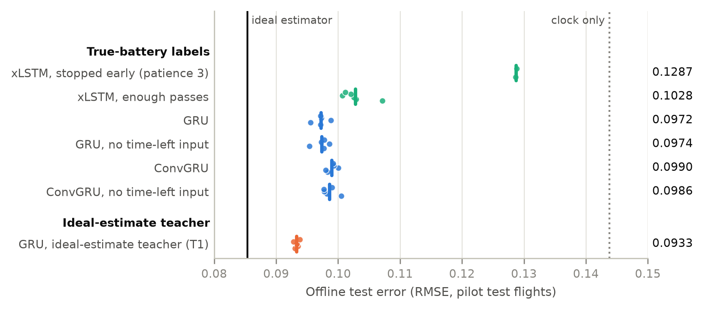
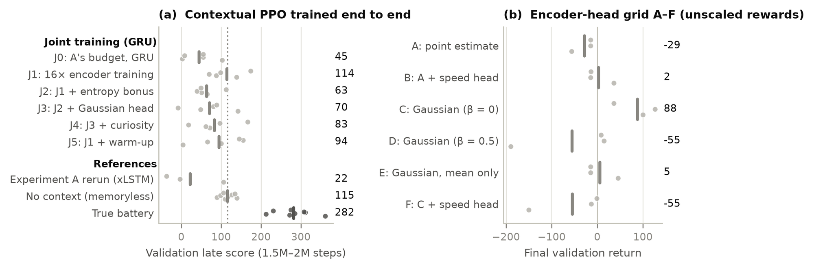

Reading Your Own Battery:
Autogenic Context in Reinforcement Learning
A plane whose battery is hidden from the pilot and drained by the pilot's own thrust: a small benchmark for a context the agent creates itself, and a two-stage recipe that learns to infer it.
The same flight, starting with 30% battery, on an unseen test seed (2× speed). The agent that cannot see its battery sprints and runs empty after 14.5 s. Ours never sees the battery either, but infers it from how the plane responds, rations, and completes the mission.
TL;DR. In BatteryPlane the agent must infer its own hidden battery charge, and the only way to see it is to fly at full throttle, which drains it. Memory agents trained end to end fall into a loop: the policy flies one narrow style, so the battery rarely shows, so the encoder learns a clock instead of the battery, so the policy ignores it. Training the encoder offline on many pilots' flights and then freezing it breaks the loop: in our main setting, plain PPO with the frozen encoder recovers about 80% of the value of seeing the true battery.
An autogenic context
Contextual reinforcement learning usually studies contexts that the environment imposes: gravity, mass, friction. The agent cannot change them, and they stay fixed during an episode. This project studies the other kind, which Biedenkapp (2026) calls autogenic: a context that the agent's own behaviour creates and changes.
Our example is a plane's battery. The battery limits how hard the cruise motor can push, and every bit of thrust drains it. A good pilot must know how much is left: with a full battery it can fly fast; with a weak one it must fly slowly to survive the 35-second mission. But the battery is hidden. It shows in the plane's motion only while the motor runs at its limit, so finding out how much battery is left costs battery. Observing the context changes it.
BatteryPlane
A 2D point-mass plane with a lift motor, a cruise motor, a wing and a battery. The agent sees four numbers: altitude, a noisy speed reading (±5 m/s), climb rate and time left. It earns reward for flying in a high speed band and loses heavily if the battery runs empty or the plane hits the ground. The starting battery is drawn between 20% and 70%, the range where rationing matters.
- The context matters: the best hand-written pilot that cannot see the battery earns 36% less than one that can, and learned agents without memory gain 130–235 points from seeing it.
- The context is hidden: below the motor's limit, the plane's motion does not depend on the battery at all.
- The context is autogenic: only the agent's own thrust drains it, and probing it (flying at the limit) is exactly what drains it fastest.
The pilots
To train the encoder offline we fly the plane with 11 scripted and learned pilots in different styles and record 19,000 flights. Variety matters: some styles reveal the battery, others hide it completely.
Method

Results
All numbers are on reserved test seeds (2000–2002), never used for training or selection: the mean final-test return over 8 training seeds.




See them fly
The same test flight for each agent; choose the starting battery. Every clip is a real final-test flight (2× speed), with the outcome in its caption.
Ablations
The training target: true battery or the ideal estimate
The true battery is a noisy label where the battery cannot be known. Training the same GRU on the ideal Bayesian estimate instead, the best guess possible from the same inputs, lowers the offline error only a little (0.097 → 0.093) but lifts PPO from 238 to 330, and removes the instability at larger batch sizes. The catch: computing that estimate needs the exact physics.

The encoder architecture
xLSTM, GRU and a convolutional GRU, with and without the time-left input, all land within 0.097–0.103 offline error once trained long enough. Patience matters far more than architecture: stopped too early, the xLSTM stays at 0.129, near a clock-only guess.

End-to-end training
More encoder training, an entropy bonus, a Gaussian head, a curiosity bonus and a warm-up: no joint-training variant beats Contextual PPO without memory.

What we learned
- The environment works as a test: knowing the battery is worth 130–235 points to agents without memory.
- End-to-end memory fails, for an autogenic reason: the policy decides what its own encoder gets to see, and a narrow policy teaches the encoder a clock.
- Diverse data breaks the loop: an encoder trained offline on many pilots' flights, then frozen, works in closed loop.
- A clean target matters more than the architecture: learning the ideal estimate instead of the noisy true battery brings PPO to the ideal estimate's level.
- Behaviour decides what can be known: policies that never fly at the motor's limit hide the battery even from a perfect estimator.
Limitations
The encoders that work are trained with privileged information: the true battery as labels, or an estimate that needs the exact physics. No method here learns the battery from reward alone. BatteryPlane is a small, single-context toy problem, and all agents train on CPU for 2 million steps.
Citation
@misc{batteryplane2026,
title = {Reading Your Own Battery: Autogenic Context in Reinforcement Learning},
author = {Buttontheduck},
year = {2026},
howpublished = {\url{https://github.com/Buttontheduck/Bidirectional-Contextual-RL}}
}